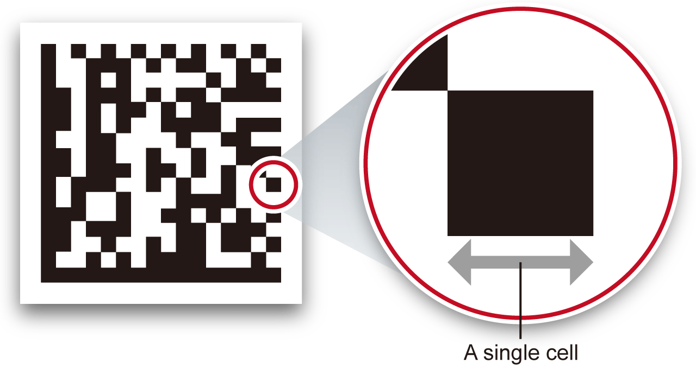

Code Reader Working distance

The distance from a lens to an inspection target is referred to as “working distance”, and an area where a code reader can see at that distance is referred to as “field of view.”
CF26-SR (6.2 mm lens)
Minimum code sizes that can be read in each working distance (unit: mm)

| Working distance | Minimum size for 1-D code | Minimum size for 2-D code |
|---|---|---|
| 40 | 0.0508 | 0.0762 |
| 65 | 0.0508 | 0.1016 |
| 105 | 0.127 | 0.1778 |
Horizontal view
CF26-LR (16 mm lens)
Minimum code sizes that can be read in each working distance (unit: mm)
| Working distance | Minimum size for 1-D code | Minimum size for 2-D code |
|---|---|---|
| 80 | 0.0508 | 0.0508 |
| 150 | 0.0508 | 0.0762 |
| 190 | 0.0508 | 0.1016 |
| 225 | 0.0762 | 0.1016 |
| 375 | 0.1016 | 0.1778 |
| 500 | 0.1524 | 0.254 |
| 1000 | 0.381 | 0.508 |
Horizontal view
CF37-SR (10.3 mm lens)
Working distance in which the code cell size is readable (unit: mm)
| Code cell size | Working distance for 1-D code | Working distance for 2-D code |
|---|---|---|
| 0.1524 | 445 | 307 |
| 0.2032 | 591 | 408 |
| 0.254 | 738 | 509 |
| 0.3302 | 958 | 660 |
| 0.381 | 1104 | 761 |
| 0.508 | 1471 | 1013 |
Horizontal view
CF37-LR (24 mm lens)
Working distance in which the code cell size is readable (unit: mm)
| Code cell size | Working distance for 1-D code | Working distance for 2-D code |
|---|---|---|
| 0.1524 | 1029 | 709 |
| 0.2032 | 1370 | 944 |
| 0.254 | 1711 | 1178 |
| 0.3302 | 2223 | 1530 |
| 0.381 | 2564 | 1764 |
| 0.508 | 3417 | 2351 |
Horizontal view